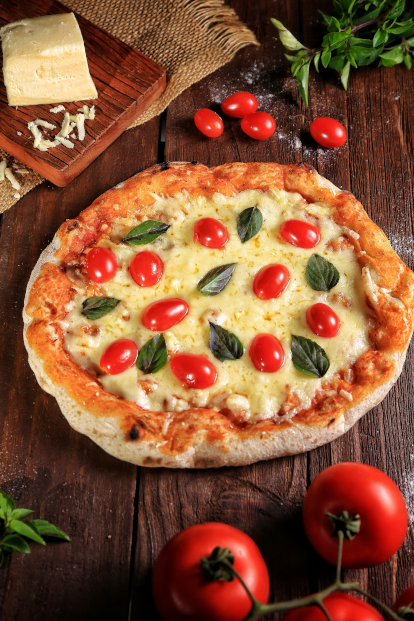

Sobre a Pizzaria Sabor da Villa
Localizada no bairro Coophasul a Pizzaria Sabor da Villa traz para o mercado o que há de melhor em pizzas. Fundada em 2016, a Pizzaria Sabor da Villa já é destaque na cidade e conquista novos clientes a cada dia.
Nossa missão é: "Proporcionar produtos de qualidade com preço justo aos clientes".
Oferecemos pizzas feitas com ingredientes da melhor qualidade com sabor inigualável e um ambiente agradável para você e sua família degustarem com muito conforto e tranquilidade. O atendimento possui padrão de excelência e agilidade, garantindo qualidade e satisfação dos nossos clientes.
Nosso estabelecimento
Nosso estabelecimento está localizado em local seguro e de fácil estacionamento.
Benefícios
- Atendimento aos Clientes
- Espaço limpo e amplo
- Fácil estacionamento
- Rapidez no atendimento
- Pontualidade nas entregas
- Higiene e boas normas